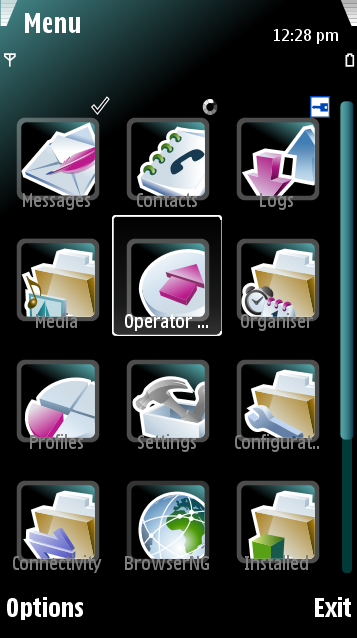
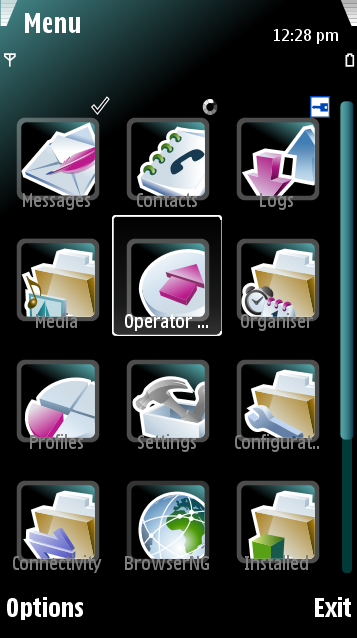
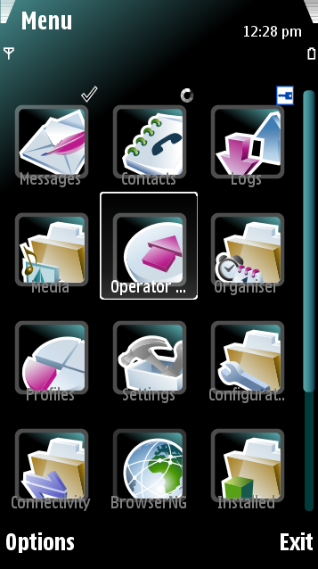

 Carbide.ui Theme Edition is a tool for creating, editing, and packaging themes for S60 / Symbian devices. Themes enable the creation of a custom UI by altering the look and feel or sound of customizable UI components. Theme components are display or sound items that can be customized to build a graphical UI or emit sounds initiated by certain actions or events on the device.
Carbide.ui provides all the tools needed to define a theme; however, it does not include tools to create the graphics or sounds used to customize components. To create graphics and sounds, third-party bitmap editors, Scalable Vector Graphics (SVG) editors, and audio editors are required. Carbide.ui can be configured to use these applications for editing graphics or audio content.

Figure: Themes can be used to radically alter the look and feel of S60 / Symbian devices’ UI
Note: Changing a device's theme only affects the look and feel of the UI. The functions and features of the phone are not changed.